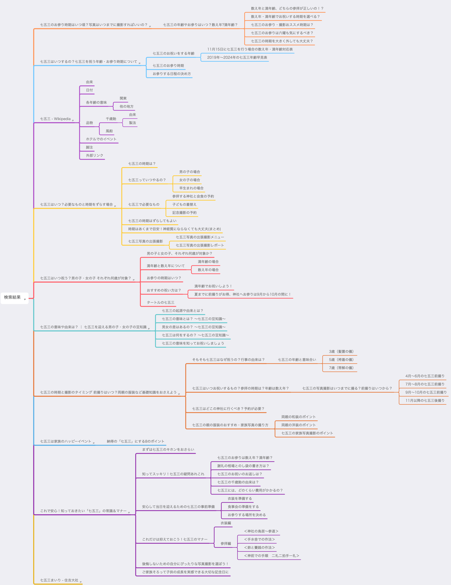

[Webマーケ]SEOに効果的な記事を書く方法
webマーケに詳しくなりたいマン

目次
この記事はこんな人が書いています
株式会社ムジカルを設立し、webアプリケーションの開発、webマーケティングを担当しています。
webアプリケーションでは、Vue.js、Ruby on Rails、Node.jsを用いての開発が得意です。
まったくゼロの状態から、要件定義を含めてシステム開発にとりかかったことで、幅広い知識を学習しながらよしなに進めるスキルを身につけました。
フリーランスとして、エンジニアリングやコンサルティングも行なっています。
詳しくはaboutを読んでみてください。
webマーケに必須のwebライティング。
今回は、webライティングの基本的な方法についてまとめてみました。
手順1: キーワード分析、方針だて
はじめにどんなキーワードで表示させたいか？を検討する必要がありますね。
これは実際ググってみて肌感を身につけるのが一番早いと思います。
ひたすら気になるキーワードを検索して、ターゲットが近そうな記事が上位に表示されているものをリストアップしていきましょう。
またキーワードの検索数についても、Googleキーワードプランナーで調べられるので、そちらを参考にしながら年間1万以上はあるキーワードを中心に調べるのがいいんじゃないかと思います。
必要なキーワードの検索数については、どの程度の流入を目指すかによって変わってきます。
難しそう！と思われるかもしれませんが、このような形で逆算してみると考えるとハードルが下がるのではないでしょうか。
キーワードの年間検索数 × 20%(1位を取れれば20%流入してくる) × 2%(メディア→見せたいものへのCVR) × 1%(購入CVR) × 単価 = 目標金額
手順2: 検索上位に表示したいことばの検索結果上位10個をまとめる
はじめに検索上位に表示させたいキーワードについて、どんな結果が出てくるのか？の分析が必要です。
なぜならGoogleが、「これはいい記事だ！」と判断しているものが上位に表示されているためです。
まとめ方としては、記事の構成をhtmlタグをベースにまとめていく方法がオススメです。
僕は、mindnodeというマインドマップ用のアプリを使ってこの作業を行なっています。
たとえば、「七五三」というキーワードだとこのような形になりますね。

手順3: オリジナリティを追加して、記事構成を考える
次にオリジナリティとなる部分を考えます。
今回の記事の作成元が、フォトスタジオさんが多かったんですよね。
なので自社のサービスを紹介するために、七五三での流入を稼ぐ記事となっていたため、今回はそのフォトスタジオの比較記事がオリジナリティになりうると考え、このような記事構成を考えてみました。
- 導入
- 七五三の由来って？
- 七五三っていつやるの？
- 七五三に必要な準備は？
- 覚えておきたい七五三のマナーは？
- おすすめのフォトスタジオ
- 紹介したいサービスについて
手順4: 実際に描いてみる
ここまでのステップを経て、ようやく記事作成に取り掛かります。
僕は、文賢という校正サービスを活用しています。
あの沈黙のwebライティングを書かれた松尾さんという方が代表をされているウェブライダーさんのサービスです。
なかなか個人では出てこないような表現例だったりもだしてもらえるので、ぜひ一度使ってみてください。
今日はこのあたりで。